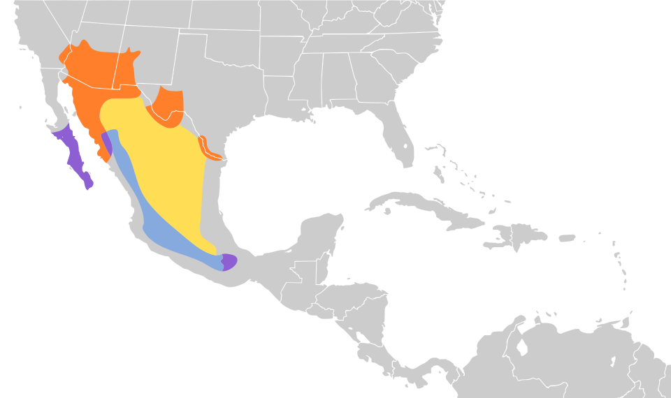

Quick Facts
- Size: 5-6 inches
- Weight: 1-2 ounces
- Lifespan: 3-6 years; Up to 10 in captivity
- Conservation Status: Least Concern
- Range: Southwestern U.S. and Mexico
Key Nighttime Adaptations
Elf owls evolved to have specialized cylindrical eyes densly filled with light-sensitive cells. Having extra vertebrae in their neck for increased head rotation and their keen night vision, elf owls are exceptionally well adapted for pest control in the desert. Along with their night vision, elf owls are silent fliers and have assymetrically aligned ear openings for better audible perception.
Diet
Elf Owls are carnivores. Their primary diet consists of nocturnal bugs and insects such as moths, beetles, and crickets. However, they are well known for hunting scorpions, spiders and the occasional pocket mice.
Role in Ecosystem
As many other predators, the elf owl plays a crucial role in keeping a major check on local insect and arachnid populations. Despite being predators, however, elf owls are prey to many other desert predators. Other owl species, snakes, and larger mammals all prey on elf owls. Elf owls also do not build their own nests. They seek out abandoned holes made by woodpeckers and other birds, in saguaro cacti.
Fun Fact: Elf Owls are known to drop a non venomous Texas blind snake into their nest to feed on parasitic mites, flies, and ants that would otherwise kill the vulnerable elf owl chicks.


Light Pollution's Effect on Elf Owls
Artifical night lighting disrupts insect activity and changes the dark conditions elf owls use to hunt. This leads to a reduction in hunting success as their stealthy hunting techniques are compromised. ALAN (Artificial Light at Night) can cause temporary blindness as an owl flies between dark and brightly lit areas, further reducing their hunting efficiency.